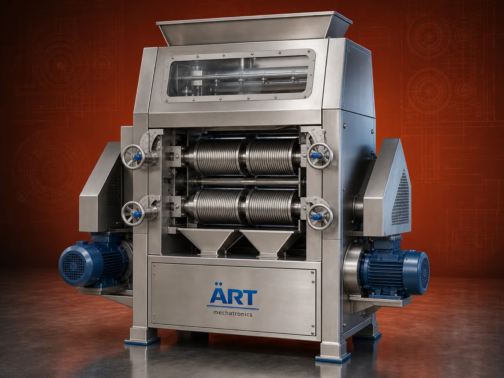

Roller Mill Machine (Industrial Precision Grinding & Controlled Size Reduction System)
A Roller Mill Machine, also known as an Industrial Roller Mill or Roller Grinding Mill, is a highly efficient grinding system designed for controlled size reduction of materials using rotating rollers.

About the Roller Mill Machine
Unlike impact-based grinding systems, roller mills apply compression and shear forces, ensuring uniform particle size, minimal heat generation, and consistent output quality.
Roller mills are widely used in industries such as flour milling, food processing, chemicals, minerals, pharmaceuticals, and feed processing, where precision grinding and product consistency are critical.
ART Mechatronics offers advanced roller mill machines, engineered for high efficiency, durability, and superior grinding performance.
One machine, many names
Buyers search for this equipment under many terms — we manufacture all of them:
Working Principle of Roller Mill
Material is fed into the machine through:
Inside the mill:
Material is crushed into:
Processed material is discharged for further processing or packaging.
Types of Roller Mills
Industries Using Roller Mill
🌾 Flour & Food Industry
- Wheat milling
- Flour production
- Food grains
⚗️ Chemical Industry
- Chemicals
- Pigments
🏗️ Mineral Processing
- Limestone
- Gypsum
- Coal
💊 Pharma Industry
- Controlled particle size
🍃 Agro Industry
- Feed processing
♻️ Recycling Industry
- Material size reduction
Features & Advantages
✔ Uniform and controlled particle size ✔ Low heat generation during grinding ✔ Energy-efficient operation ✔ Suitable for fragile and heat-sensitive materials ✔ Adjustable roller gap for precision control ✔ Durable and robust construction ✔ Low maintenance requirement
Technical Highlights
- Capacity: Custom (kg/hr to tons/hr)
- Grinding Type: Compression & Shear
- Roller Material: Alloy steel / hardened steel
- Gap Adjustment: Adjustable
- Construction: Mild Steel / Stainless Steel
- Drive: Electric motor
Turnkey Roller Mill Solutions
ART Mechatronics offers:
- Complete grinding system design
- Roller mill supply
- Feeding and conveying integration
- Dust collection system integration
- Installation & commissioning
- After-sales service & AMC
Why Choose Art Mechatronics
- Expertise in precision grinding systems
- Customized solutions for various industries
- High-efficiency and durable machines
- Consistent product quality output
- Proven performance across applications
Applications
- Flour Mills
- Food Processing Units
- Chemical Processing Plants
- Mineral Grinding Units
- Pharma Manufacturing Units
Industries that use the Roller Mill Machine
Related Size Reduction & Grinding machines
Get pricing & specs for the Roller Mill Machine
Share the product, target capacity, current process and plant location. These details help our engineers discuss the right machine or line configuration.
One partner, from design to start-up
ART Mechatronics designs, manufactures, installs and commissions your Roller Mill Machine solution with regional presence in India, UAE and Thailand.